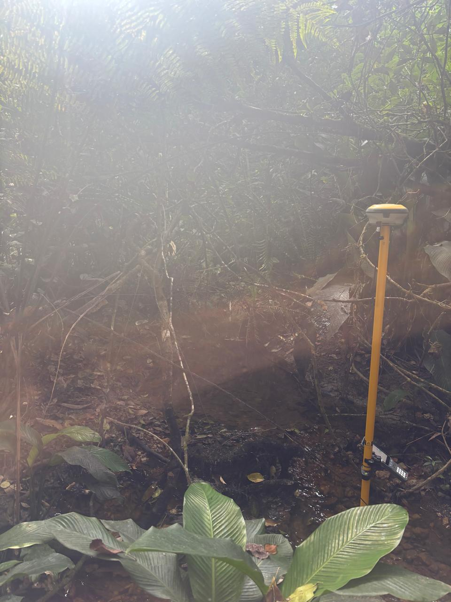
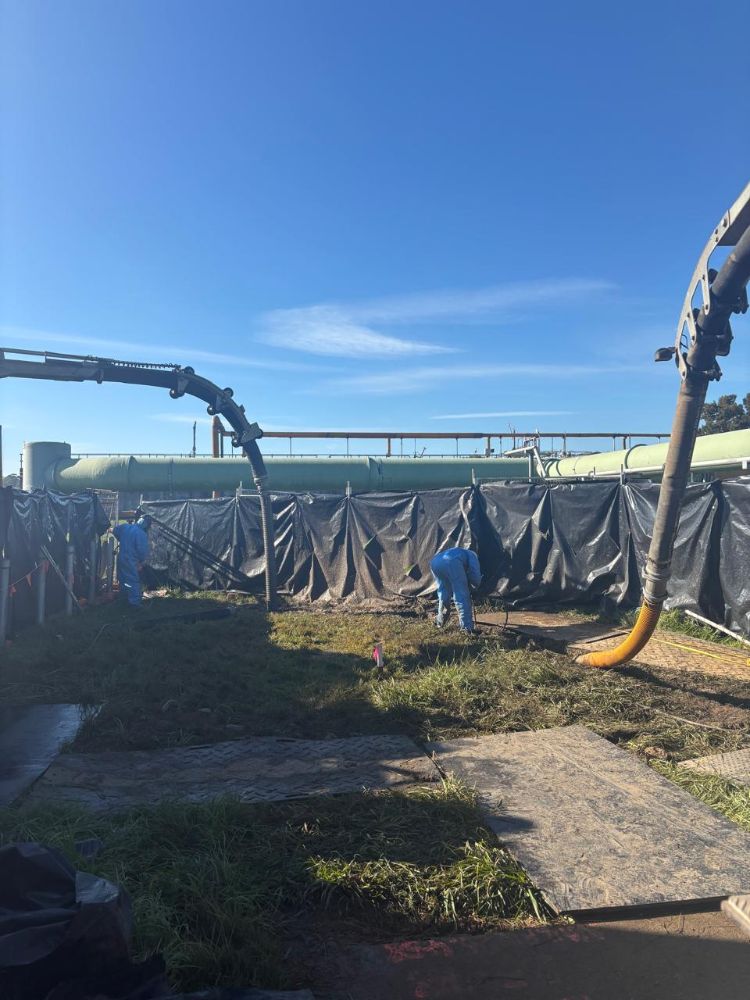
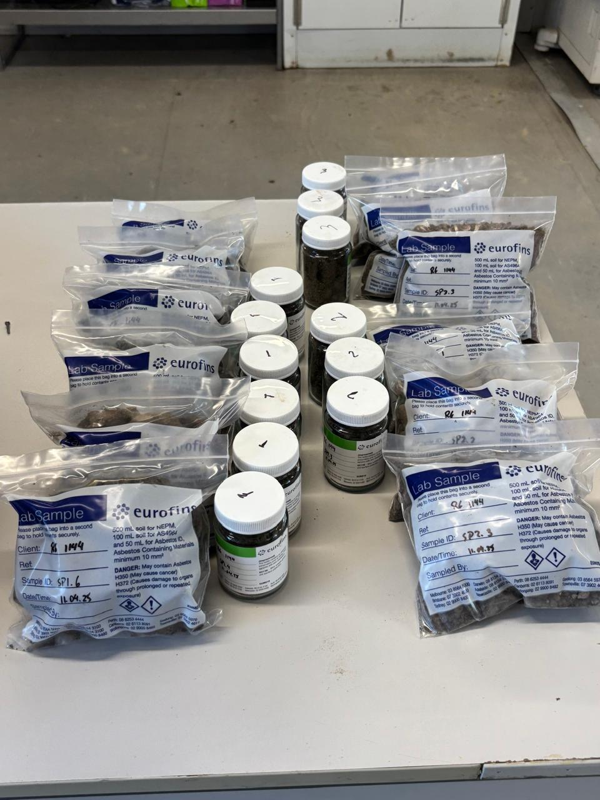
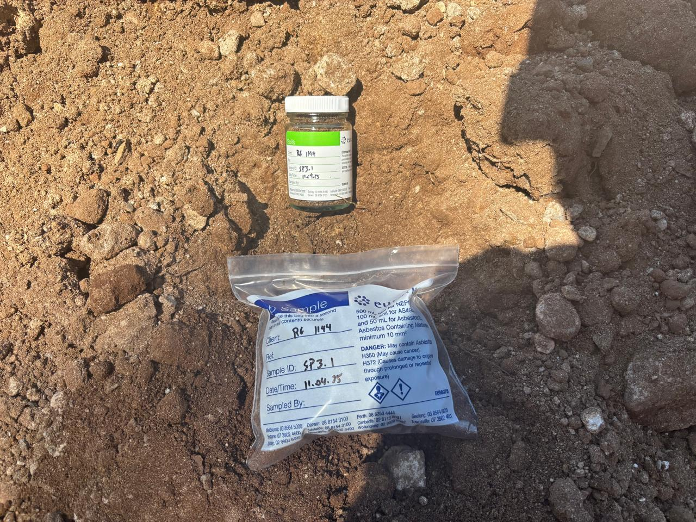
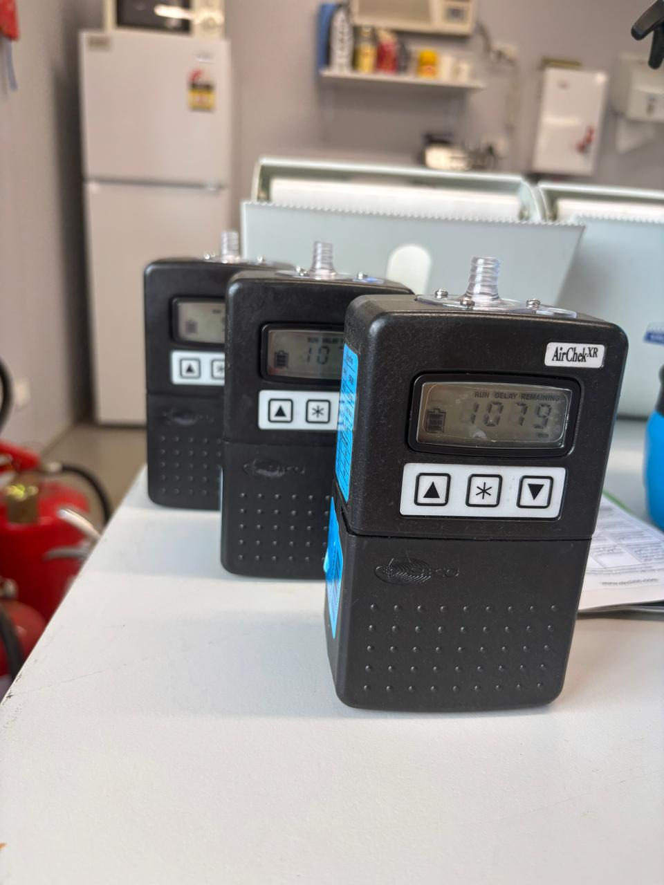
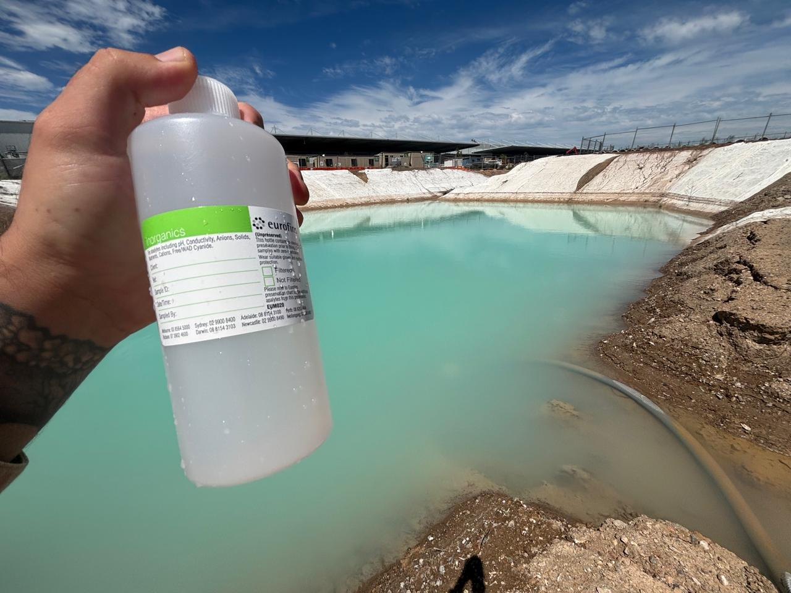
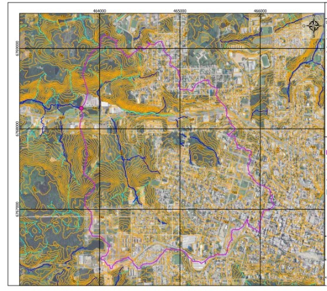

Consultoria ambiental com raízes no Vale do Itajaí. Environmental consulting rooted in the Itajaí Valley.
Licenciamento, estudos de impacto e gestão de resíduos para empresas e empreendimentos que precisam operar em conformidade com a legislação ambiental — da Mata Atlântica ao chão de fábrica. Licensing, impact studies, and waste management for companies and projects that need to operate in compliance with environmental law — from the Atlantic Forest to the factory floor.
Mauricio BusettiMauricio Busetti
Licenciar em Itajaí exige conhecer a lei, o território e o que o IMA e o INIS vão perguntar. Com trajetória consolidada no Brasil e no exterior, incluindo projetos em conformidade com a EPA (Environmental Protection Agency), transformo exigências ambientais complexas em soluções técnicas que fazem o projeto avançar sem retrabalho. Licensing a project in Itajaí means knowing the law, the territory, and what IMA and INIS will ask. With a solid track record in Brazil and abroad — including projects in compliance with the EPA (Environmental Protection Agency) — I turn complex environmental requirements into technical solutions that keep projects moving without rework.
Atendo construtoras, loteadoras e indústrias de Itajaí e região com licenciamento ambiental, EIV, projetos de efluentes e avaliação de passivos ambientais. I work with construction firms, subdivision developers, and industries in Itajaí and the region on environmental licensing, EIV, effluent projects, and environmental liability assessments.
O melhor momento para envolver a consultoria ambiental é antes de comprar o terreno ou protocolar o projeto. Vamos conversar? The best time to bring in environmental consulting is before you buy the land or file the project. Let's talk?
- BaciaBasinItajaí-Açu
- BiomaBiomeMata AtlânticaAtlantic Forest
- RegiãoRegionVale do Itajaí, SC
- PaísCountryBrasilBrazil
Onde eu ajudoWhere I help
Licenciamento AmbientalEnvironmental Licensing
Condução de processos de Licença Prévia, de Instalação e de Operação para loteamentos, condomínios e indústrias junto aos órgãos ambientais competentes (IMA-SC, prefeituras, órgãos federais) — incluindo a elaboração de EIA/RIMA e EAS conforme o porte e o grau de impacto do empreendimento. Handling Prior, Installation, and Operating License processes for subdivisions, residential developments, and industrial facilities with the relevant environmental agencies (IMA-SC, municipal and federal bodies) — including preparation of full EIA/RIMA or simplified EAS studies, depending on project size and impact.
Áreas ContaminadasContaminated Sites
Avaliação de passivos ambientais conforme NBR 15515 e devida diligência para aquisição, financiamento ou desativação de terrenos e imóveis industriais. Environmental liability assessment per NBR 15515, and due diligence for the acquisition, financing, or decommissioning of industrial land and property.
Monitoramento de Ar, Água e SoloAir, Water & Soil Monitoring
Amostragem e monitoramento de qualidade do ar, água e solo, com acompanhamento de condicionantes de licença e laudos técnicos periódicos. Sampling and monitoring of air, water, and soil quality, including tracking of license conditions and periodic technical reporting.
Auditoria Ambiental & ISOEnvironmental Auditing & ISO
Auditorias internas e externas de sistemas de gestão ISO 9001, ISO 14001 e ISO 45001, com apoio ao tratamento de não conformidades e preparação para certificação. Internal and external audits of ISO 9001, ISO 14001, and ISO 45001 management systems, including nonconformity resolution and certification readiness support.
Apoio Geotécnico & LaboratorialGeotechnical & Laboratory Support
Acompanhamento de ensaios geotécnicos e de laboratório, controle de qualidade de amostragem e experiência internacional com padrões de acreditação (NATA, Austrália). Oversight of geotechnical and laboratory testing, sampling quality control, and international experience with accreditation standards (NATA, Australia).
Gestão de Resíduos & ComplianceWaste Management & Compliance
Planos de Gerenciamento de Resíduos Sólidos e da Construção Civil (PGRS, PGRCC), auditorias de conformidade legal e apoio à adequação de processos industriais às normas ambientais vigentes. Solid Waste and Construction Waste Management Plans (PGRS, PGRCC), legal compliance audits, and support adapting industrial processes to current environmental regulations.
Recursos Hídricos & OutorgaWater Resources & Water-Use Permits
Elaboração de processos de outorga de uso de recursos hídricos junto aos órgãos competentes, e estudos de autodepuração de efluentes lançados em corpos hídricos. Water-use grant (outorga) applications with the relevant agencies, and effluent self-purification studies for discharge into receiving water bodies.
Estações de Tratamento (ETA/ETE)Water & Sewage Treatment Plants
Responsabilidade técnica em projetos e operação de Estações de Tratamento de Água (ETA) e de Esgoto (ETE), com dimensionamento e adequação aos padrões de lançamento. Technical responsibility for the design and operation of Water (ETA) and Sewage (ETE) Treatment Plants, including sizing and compliance with discharge standards.
Projetos e trabalho de campoProjects and field work
Projetos selecionadosSelected projects
Loteamento Residencial Bela VistaBela Vista Residential Subdivision
Licenciamento ambiental e Estudo de Impacto de Vizinhança (EIV) completo — incluindo PGRCC, laudo de ruído e estudo de tráfego veicular — para loteamento residencial com infraestrutura completa de drenagem, água e esgoto. Full environmental licensing and Neighborhood Impact Study (EIV) — including a construction waste plan, noise report, and traffic study — for a residential subdivision with full drainage, water, and sewage infrastructure.
Loteamento ResidencialResidential Subdivision
Licenciamento ambiental e EIV completo para loteamento residencial com preservação de vegetação nativa e área verde interna. Full environmental licensing and EIV for a residential subdivision with preserved native vegetation and internal green space.
Condomínio Rio do MeioRio do Meio Condominium
Licenciamento ambiental e EIV completo para condomínio fechado às margens do Rio do Meio, com faixas de APP e área verde preservadas. Full environmental licensing and EIV for a gated condominium along the Rio do Meio, with preserved riparian buffers and green space.
Trabalho de campoField work







Como funciona um licenciamentoHow environmental licensing works
Licença PréviaPrior License
Viabilidade ambiental do empreendimento, ainda na fase de planejamento.Environmental feasibility, assessed during the planning stage.
Licença de InstalaçãoInstallation License
Autorização para iniciar a instalação, conforme projeto executivo aprovado.Authorization to begin installation, per the approved executive design.
Licença de OperaçãoOperating License
Autorização para operar, após verificação do cumprimento das condicionantes.Authorization to operate, once compliance with license conditions is verified.
MonitoramentoMonitoring
Acompanhamento contínuo e renovação periódica das licenças.Ongoing monitoring and periodic license renewal.
Vamos conversar sobre o seu projetoLet's talk about your project
- E-mailEmail busettienvironmental@gmail.com
- WhatsAppWhatsApp +55 54 99128 0201
- LinkedInLinkedIn /busettienvironmental
- RegiãoRegion Vale do Itajaí, SC — BrasilBrazil
Envie um resumo do empreendimento, a localização e a fase atual do projeto — o retorno traz um panorama do que a legislação exige e dos próximos passos. Send a short summary of the project, its location, and the current stage — the reply will outline what the law requires and the next steps.
Enviar e-mailSend email